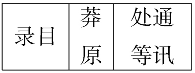

广平兄：
来信收到了。今天又收到一封文稿，拜读过了，后三段是好的，首一段累堕一点，所以看纸面如何，也许将这一段删去。但第二期上已经来不及登，因为不知“小鬼”何意，竟不题作者名字。所以请你捏造一个，并且通知我，并且必须于下星期三上午以前通知，并且回信中不准说“请先生随便写上一个可也”之类的油滑话。
现在的小周刊，目录必在角上者，是为订成本子之后，读者容易翻检起见，倘要检查什么，就不必全本翻开，才能够看见每天的细目。但也确有隔断读者注意的弊病，我想了另一格式，如下：

则目录既在边上，容易检查，又无隔断本文之弊，可惜《莽原》第一期已经印出，不能便即变换了，但到二十期以后，我想“试他一试”。至于印在末尾，书籍尚可，定期刊不合宜，擅起此种“心理作用”，应该记大过二次。《莽原》第一期的作者和性质，都如来信所言，但长虹不是我，乃是我今年新认识的。意见也有一部分和我相合，而是安那其主义者。他很能做文章，但大约因为受了尼采的作品的影响之故罢，常有太晦涩难解处；第二期登出的署著C.H.的，也是他的作品。至于《棉袍里的世界》所说的“掠夺”问题，则敢请少爷不必多心，我辈赴贵校教书，每月明明写定“致送修金十三元五角正”。既有“十三元五角”而且“正”，则又何“掠夺”之有也欤哉！
割舌之罚，早在我的意中，然而倒不以为意。近来整天的和人谈话，颇觉得有点苦了，割去舌头，则一者免得教书，二者免得陪客，三者免得做官，四者免得讲应酬话，五者免得演说；从此可以专心做报章文字，岂不舒服。所以你们应该趁我还未割去舌头之前听完《苦闷之象征》，前回的不肯听讲而逼上午门，也就应该记大过若干次。而我的六十分，则必有无疑。因为这并非“界限分得太清”之故，我无论对于什么学生，都不用“冲锋突围而出”之法也。况且，窃闻小姐之类，大抵容易“潸然泪下”，倘我挥拳打出，诸君在后面哭而送之，则这一篇文章的分数，岂非当在○分以下？现在不然，可知定为六十分者，还是自己客气的。
但是这次试验，我却可以自认失败，因为我过于大意，以为广平少爷未必如此“细心”，题目出得太容易了。现在也只好任凭占卦抽签，不再辩论，装作舌头已经割去之状。惟报仇题目，却也不再交卷，因为时间太严。那信是星期一上午收到的，午后即须上课，更无作答的工夫，一经上课，则无论答得如何正确，也必被冤为“临时豫备夹带然后交卷”，倒不如拚出，交了白卷便宜。
今天《京报》上，不知何以琴心问题忽而寂然了，听说馆中还有琴心文四篇，及反对他的十几篇，或者都就此中止，也未可知。今天但有两种怪广告，——欧阳兰及“宇铨先生”——后一种更莫名其妙。《北大日刊》上又有一个欧阳兰启事，说是要到欧洲去了。
中国现今文坛（？）的状态，实在不佳，但究竟做诗及小说者尚有人。最缺少的是“文明批评”和“社会批评”，我之以《莽原》起哄，大半也就为得想引出些新的这样的批评者来，虽在割去敝舌之后，也还有人说话，继续撕去旧社会的假面。可惜现在所收的稿子，也还是小说多。
鲁迅 四月二十八日
注 释
[492] 此信经作者整理编辑收入《两地书》，序号一七。